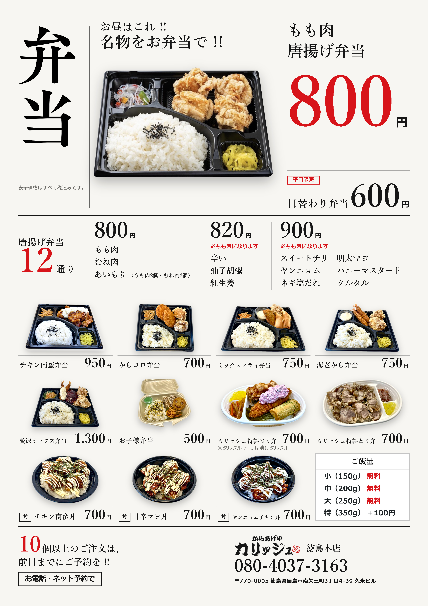
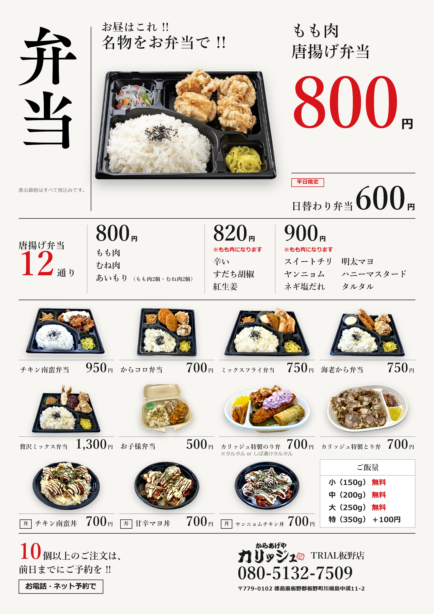

1枚目 · 単品
画像を拡大 ↗ 単品の画像をダウンロード
単品の画像をダウンロードカリッジュ · メニュー表 C案
画像をタップすると拡大できます。画像・PDFは下のボタンから保存できます。
更新：2026/10/03 16:13（日本時間）
LINEで画像を送る場合は、各画像の「ダウンロード」を押してください。PDFは各店の2枚をまとめたファイルです。iPhoneは「ファイル」アプリの「ダウンロード」から、共有ボタンでLINEなどに送れます。LINE内で保存できない場合は、SafariやChromeでこのページを開いてください。
単品の画像をダウンロード
弁当の画像をダウンロード 単品の画像をダウンロード
単品の画像をダウンロード
弁当の画像をダウンロード